资源
正文
01-初识 Canvas
- 创建一个 canvas：
1 | |
-
一个 canvas 画布一般包含三要素：
-
id: 标识元素的唯一性 -
width: 画布的宽度 -
height: 画布的高度
-
-
在 Canvas 上画画：
- 找到 ID 为
c的画布：
- 找到 ID 为
1 | |
- 获取画笔，上下文对象：
1 | |
- 绘制矩形：
fillRect(位置 x, 位置 y, 宽度, 高度）
1 | |
- 完整代码：
1 | |
- 最终效果：
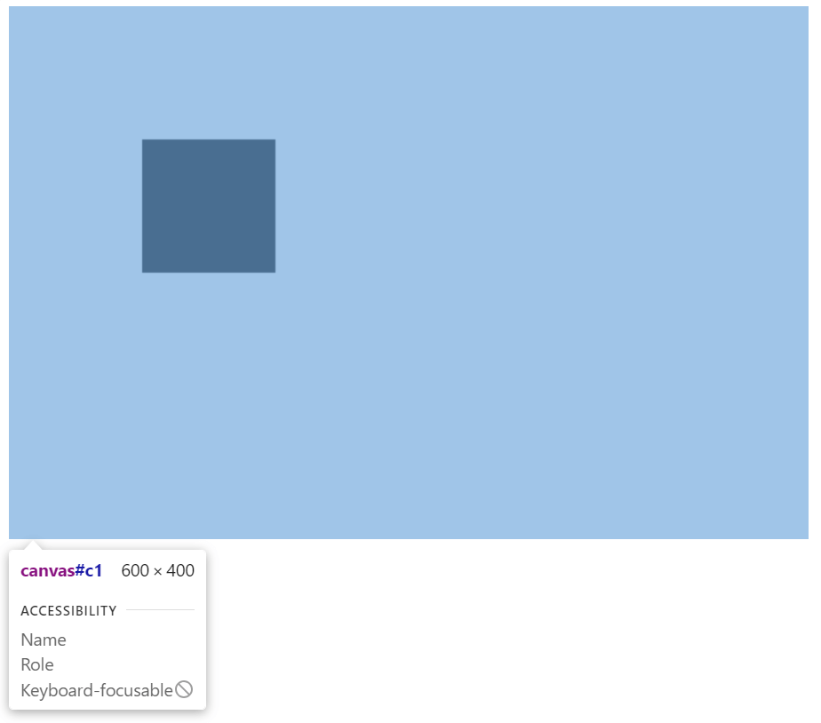
02-canvas上下文对象与浏览器支持
- 对于不适应 canvas 的浏览器，
c.getContext将会返回空，可以输出提示信息：
1 | |
- 如果不适应 canvas，canvas 里的内容就不会被覆盖，就可以操作一番：
1 | |
- 画笔有很多属性，
console.log(ctx);输出它们：
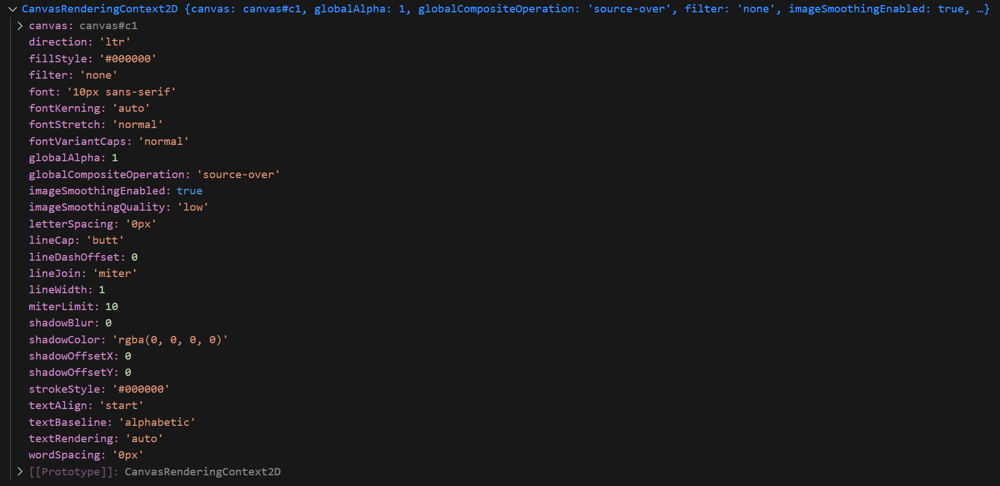
- HTMLCanvasElement.getContext() - Web API 接口参考 | MDN (mozilla.org) 通过看参考文档查看各个接口的用法。
- 完整代码：
1 | |
03-Canvas 填充与路径绘制
- 在 canvas 中，如果
style属性设置了大小，则这个画布在网页上的最终显示将会进行拉伸变换。（但是一般是设置相同的）
1 | |
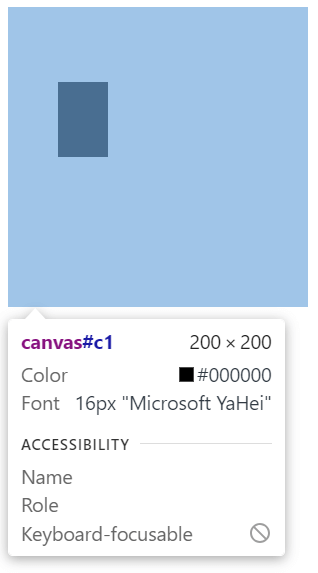
- 之前使用
ctx.fillRect()会生成自带填充的矩形，而使用ctx.strokeRect()则会以路径形式绘制矩形。strokeRect(x1, y1, 矩形宽度，矩形高度)x1为矩形左上角的点到画布左上角 x 轴的距离y1为矩形左上角的点到画布左上角 y 轴的距离
1 | |
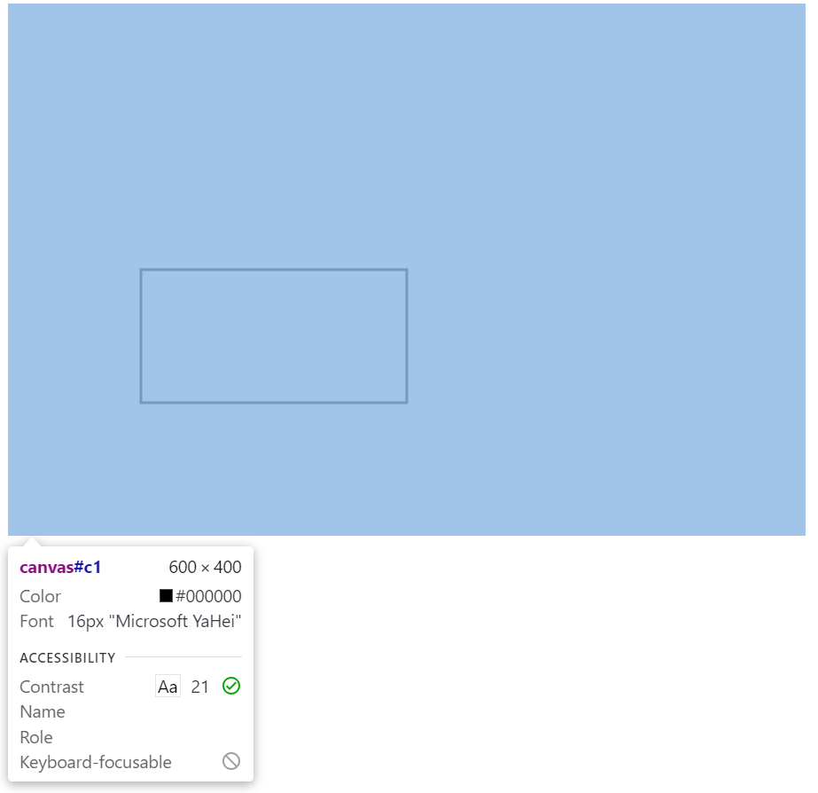
- 清除画布范围内的矩形：
1 | |
-
使用
setInterval()来完成清除的动画。（感觉语法有点像 DOTween）
1 | |
- 定义矩形，但不绘制：
1 | |
- 填充所定义的矩形：
1 | |
- 描边所定义的矩形：
1 | |
ctx.beginPath();和ctx.closePath();分别表示提笔和抬笔操作，这样绘制的时候不会覆盖之前定义的图形。（有种 Windows 程序设计的味道）
1 | |
04-canvas绘制圆弧与笑脸
- arc 是绘制圆弧的方法。
- ctx.arc(圆心x, 圆心y, 半径, 开始的角度, 结束的角度, 逆时针（true）还是顺时针（false）);
1 | |
- 使用圆弧工具绘制一个笑脸，记得要分别使用
ctx.beginPath();和ctx.closePath();提笔和抬笔，不然路径会相连。
1 | |
- 上述方法代码太繁琐，改用
moveTo来移动点。
1 | |
- 最终效果：
05-绘制折线线段
1 | |
- 将画笔移动到
(300, 200)，然后划线至(350, 250)。
- 范例：
1 | |
- 最终效果：
06-actTo 绘制圆弧方式
- actTo，用 3 个点控制一段圆弧。
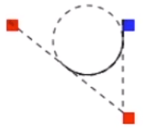
1 | |
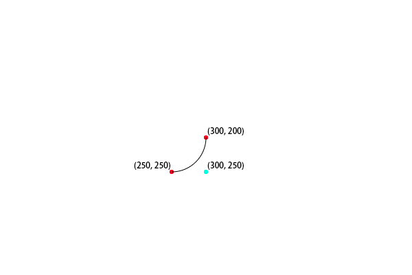
07-二次贝塞尔曲线实现聊天气泡框
- 使用
ctx.quadraticCurveTo()可以绘制二次贝塞尔曲线。
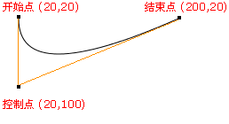
- 开始点：moveTo(
20,20) - 控制点：quadraticCurveTo(
20,100,200,20) - 结束点：quadraticCurveTo(20,100,
200,20)
- 使用二次贝塞尔曲线画一个聊天气泡框：
1 | |
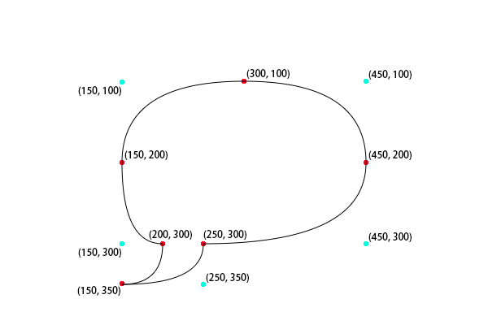
08-三次贝塞尔曲线实现献给朋友的爱心
-
ctx.bezierCurveTo(控制点 1, 控制点 2, 终点)函数。
- 代码：
1 | |
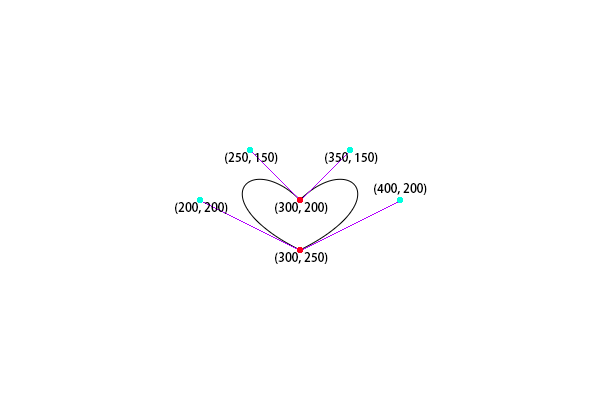
09-封装路径Path2d
- 将之前所画的心形封装成一个路径：
1 | |
- 或是使用 svg 字符串创建一个路径：
1 | |
- 最终效果：
10-颜色样式控制
ctx.strokeStyle = ""和ctx.fillStyle = ""分别设置描边和填充样式。”red“预设颜色。"#ff00ff"16 进制颜色。rgb(255, 0, 0)RGB 颜色。rgba(200, 200, 255)RGBA 颜色。
ctx.globalAlpha = 0.5;设置全局透明度。
- 演示效果：
11-线型渐变和径向渐变
-
context.createLinearGradient(x0,y0,x1,y1);
- 线性渐变：
1 | |
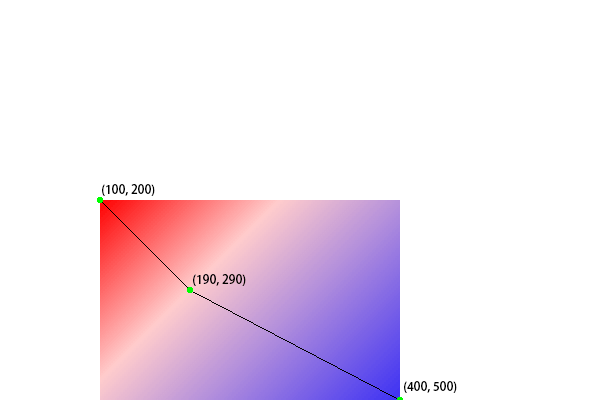
- 线性渐变动画：
1 | |
-
径向渐变：
-
context.createRadialGradient(x0,y0,r0,x1,y1,r1);
1 | |
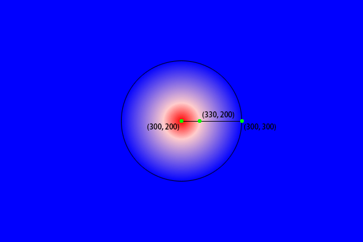
- 径向渐变画个球：
1 | |
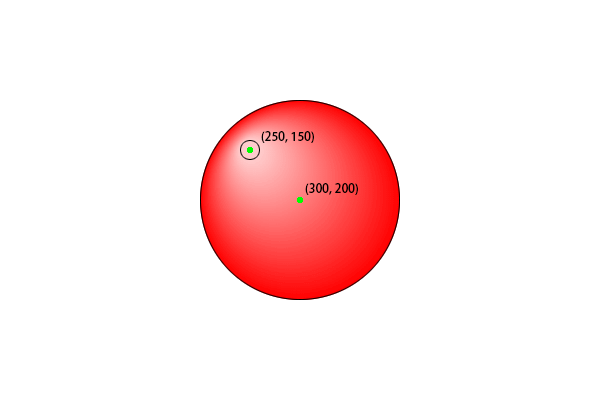
12-圆锥渐变特效
1 | |
13-pattern 印章填充样式
createPattern(图片对象，重复方式);- 图片对象（可以是 image 对象，也可以是 canvas 对象）
- 重复方式 repeat, no-repeat, repeat-x, repeat-y
1 | |
14-线段和虚线样式设置
1 | |
1 | |
1 | |
-
ctx.setLineDash([40, 20])方法会设置线条的虚线样式，其中数组中的数字表示虚线和实线的长度（单位为像素）。在本例中，[40, 20] 表示先绘制长度为 40 的实线，再跳过长度为 20 的空白，然后重复这个过程。因此，这段代码将绘制一个由实线和空白组成的虚线。 -
ctx.lineDashOffset = 10则是设置虚线的偏移量。这个属性可以改变虚线起始点的位置。
1 | |
15-canvas 阴影设置
- 核心代码：
1 | |
- 完整代码：
1 | |
16-canvas 绘制图片的三种模式
1 | |
17-canvas 绘制动态视频并添加水印
1 | |
<video>组件可以在网页中显示视频。
可以把视频里的帧放入 canvas 中，还可以在视频上叠加水印。
1 | |
18-文字绘制与对齐
- 绘制文字颜色
1 | |
- 设置文字大小与字体
1 | |
- 填充渲染文字
fillText(文本, 文本的起点 x 坐标, 文本的起点 y 坐标, 绘制文字的最大宽度)
1 | |
- 文本对齐选项
textAlign, start（默认）, end, left, right, center
1 | |
- 文本基线对齐，
textBaseline, top, bottom, alphabetic
1 | |
- 文本的方向
1 | |
- 预测量文本宽度
1 | |
- 绘制文本边框
1 | |
- 完整代码
1 | |
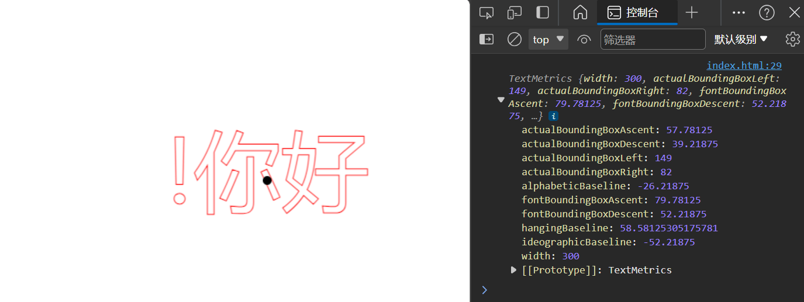
19-位移_缩放_旋转变换
ctx.translate(100, 100);- 让坐标系原点向左和向下移动 100px。
ctx.rotate(Math.PI / 6);- 逆时针旋转坐标系 30°
ctx.scale(5, 2);- 让坐标系分别沿 x 轴和 y 轴缩放 5 倍和 2 倍。
- 完整代码：
1 | |
20-transform 使用矩阵完成图像变换操作
transform(a, b, c, d, e, f)，直接对变形矩阵进行修改：
1 | |
21-canvas 合成图像模式
1 | |
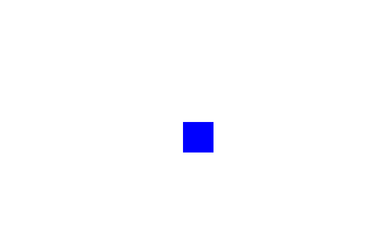
22-合成图像实现刮刮卡
1 | |
1 | |
- 使用
<canvas>盖住刮刮卡背后的文字。
1 | |
-
通过按下鼠标并移动在鼠标的位置画圆实现刮刮卡的效果。
-
ctx.globalCompositeOperation = "destination-out";将圆形和遮罩重叠的部分设为透明。
- 最终效果：
23-裁剪路径
裁切路径和普通的 canvas 图形差不多，不同的是它的作用是遮罩，用来隐藏不需要的部分。所有在路径以外的部分都不会在canvas 上绘制出来。
clip()将当前构建的路径转换为当前的裁剪路径。
1 | |
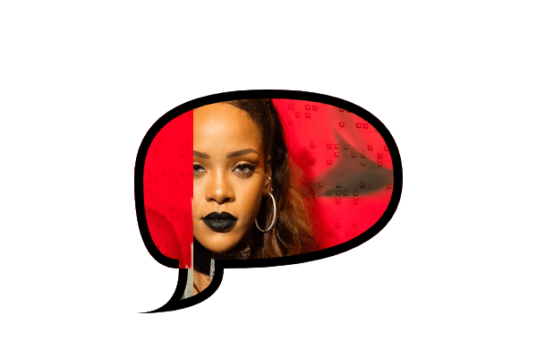
24-状态的保存和恢复
save()将当前状态压入一个栈中。restore()从栈中取出一个状态并应用之。
1 | |
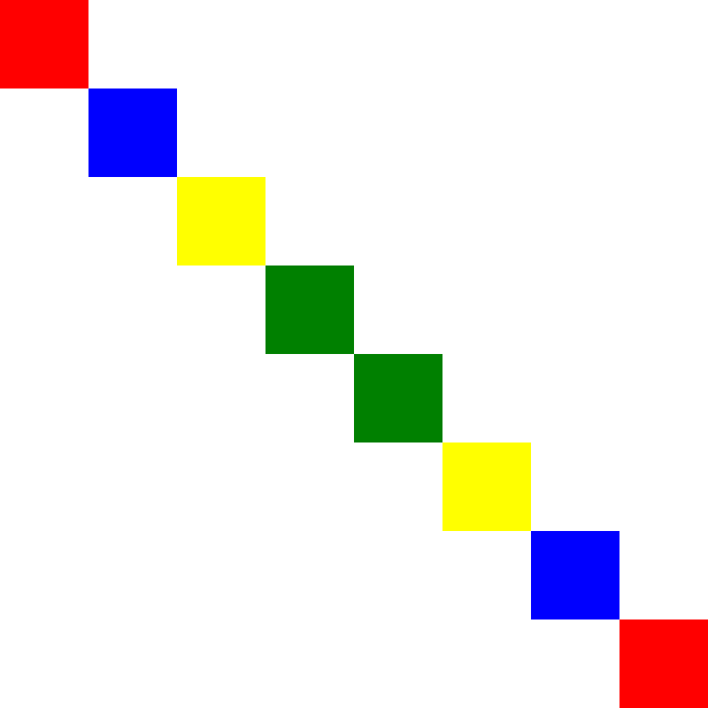
25-像素操作
- HTML canvas getImageData() 方法 (w3school.com.cn)
getImageData()直接获取 Canvas 中某个区域里的像素值（RGBA 形式）。 - 如果使用
getImageData()出现了跨域问题，应使用 Live Server 解决之。
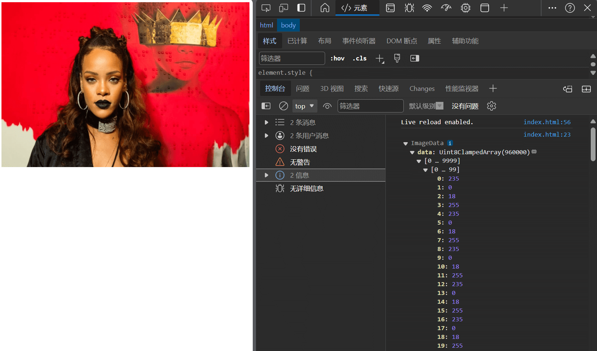
-
然后你可以操作这些像素，再用
putImageData()将这些像素画回画布中。 -
完整代码：
1 | |
26-高级封装绘制元素和实现元素交互
- 这节大概是讲怎么应用面向对象的思想吧……
- Javascript 创建一个
Heart类，并设计constructor()构造函数，使用draw()绘制图案。
1 | |
- 设计一下
onmousemove()让用户在鼠标移向图案的时候，图案变色：
1 | |
更牛逼的写法……emmm 学不来。
创建一个
Heart对象，并注册了其onHover和onLeave事件，当鼠标悬停在心形图形上时，颜色变为蓝色；当鼠标离开时，颜色变回红色。创建一个
render函数，使用requestAnimationFrame方法定期重新绘制心形图形，从而实现动画效果。
1 | |
27-canvas 实现在线画板
-
设置若干按钮：
-
boldBtn粗画笔- 调整模式为画笔模式
source-over - 将画笔粗细设为
20 - 设置按钮显示状态
1
2
3
4
5
6
7boldBtn.onclick = function () {
ctx.globalCompositeOperation = 'source-over';
ctx.lineWidth = 20;
boldBtn.classList.add('active');
thinBtn.classList.remove('active');
clearBtn.classList.remove('active');
} - 调整模式为画笔模式
-
thinBtn细画笔-
调整模式为画笔模式
source-over -
将画笔粗细设为
1 -
设置按钮显示状态
1
2
3
4
5
6
7thinBtn.onclick = function () {
ctx.globalCompositeOperation = 'source-over';
ctx.lineWidth = 1;
thinBtn.classList.add('active');
boldBtn.classList.remove('active');
clearBtn.classList.remove('active');
} -
-
saveBtn保存图像- 把当前画布下载并保存
1
2
3
4
5
6
7saveBtn.onclick = function () {
var urlData = canvas.toDataURL();
var downloadA = document.createElement('a');
downloadA.setAttribute('download', '酷炫签名');
downloadA.href = urlData;
downloadA.click();
} -
color调色- 设置画笔颜色
1
2
3inputColor.onchange = function () {
ctx.strokeStyle = inputColor.value;
} -
clearBtn橡皮擦- 调整模式为擦除模式
destination-out - 将画笔粗细设为
30 - 设置按钮显示状态
1
2
3
4
5
6
7clearBtn.onclick = function () {
ctx.globalCompositeOperation = 'destination-out';
ctx.lineWidth = 30;
clearBtn.classList.add('active');
thinBtn.classList.remove('active');
boldBtn.classList.remove('active');
} - 调整模式为擦除模式
-
nullBtn清空画布1
2
3nullBtn.onclick = function () {
ctx.clearRect(0, 0, 800, 600);
}
-
1 | |
28-canvas 绘制动态时钟
-
var time = new Date();获取当前时间 -
render()下每秒重绘：- 绘制表盘
- 时针刻度
- 分针刻度
- 绘制指针
- 时针
- 分针
- 秒针
- 绘制表盘
1 | |
当前时间是：